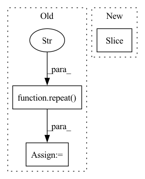

Pattern ID :27608
Before Change
seq = seq * scales * pi
x_sinu = repeat( seq, "i d -> i j d" , j = n)
y_sinu = repeat(seq, "j d -> i j d", i = n)
sin = torch.cat((x_sinu.sin(), y_sinu.sin()), dim = -1)
cos = torch.cat((x_sinu.cos(), y_sinu.cos()), dim = -1)After Change
self.register_buffer("scales", scales)
def forward(self, x):
device, dtype, h, w = x.device, x.dtype, *x.shape[-2: ]
seq_x = torch.linspace(-1., 1., steps = h, device = device)
seq_x = seq_x.unsqueeze(-1)In pattern: SUPERPATTERN
Frequency: 3
Non-data size: 3
Instances Fragment ID: 81947218
Project Name: lucidrains/uformer-pytorch
Commit Name: a51da45df6271fc5fbb1dda68ae5605be25a8f70
Time: 2021-06-17
Author: lucidrains@gmail.com
File Name: uformer_pytorch/uformer_pytorch.py
M Class Name: AxialRotaryEmbedding
N Class Name: AxialRotaryEmbedding
M Method Name: forward(2)
N Method Name: forward(2)
M Parent Class: nn.Module
N Parent Class: nn.Module
M File Name: uformer_pytorch/uformer_pytorch.py
N File Name: uformer_pytorch/uformer_pytorch.py
M Start Line: 45
M End Line: 56
N Start Line: 48
N End Line: 66
Before Change
// properly chunk positional embeddings
q_pos_emb = repeat(q_pos_emb, "1 h (k n) d -> (b k) h n d", n = chunk_size, b = b)
k_pos_emb = repeat( k_pos_emb, "1 h (k n) d -> (b k) h (r n) d" , n = chunk_size, b = b, r = num_retrieved)
pos_emb = (q_pos_emb, k_pos_emb)
// reshape so we have chunk to chunk attention, without breaking causalityAfter Change
def forward(self, x, *, context, pos_emb = None, **kwargs):
// derive variables
b, n, num_chunks, num_retrieved, chunk_size = x.shape[0], x.shape[-2], *context.shape[-4:-1 ]
causal_padding = chunk_size - 1
// causal padding Fragment ID: 81947222
Project Name: lucidrains/retro-pytorch
Commit Name: 1ff2901fb9c7dd2ad49abd9dc643cb9fd7edac5e
Time: 2022-01-17
Author: lucidrains@gmail.com
File Name: retro_pytorch/retro_pytorch.py
M Class Name: ChunkedCrossAttention
N Class Name: ChunkedCrossAttention
M Method Name: forward(2)
N Method Name: forward(2)
M Parent Class: nn.Module
N Parent Class: nn.Module
M File Name: retro_pytorch/retro_pytorch.py
N File Name: retro_pytorch/retro_pytorch.py
M Start Line: 167
M End Line: 198
N Start Line: 167
N End Line: 192
Before Change
x = self.valley_transformer(x)
x = repeat( x, "b n d -> b (n r) d" , r = shorten_factor)
x = x[:, :n]
x = x + x_residual
After Change
def forward(self, x):
// b : batch, n : sequence length, d : feature dimension, s : shortening factor
s, b, n = self.shorten_factor, *x.shape[:2 ]
// top half of hourglass, pre-transformer layers
Fragment ID: 81947220
Project Name: lucidrains/hourglass-transformer-pytorch
Commit Name: 44ad24d1a9673a2d953ffc39afe455d42d56fbb1
Time: 2021-11-09
Author: lucidrains@gmail.com
File Name: hourglass_transformer_pytorch/hourglass_transformer_pytorch.py
M Class Name: HourglassTransformer
N Class Name: HourglassTransformer
M Method Name: forward(2)
N Method Name: forward(2)
M Parent Class: nn.Module
N Parent Class: nn.Module
M File Name: hourglass_transformer_pytorch/hourglass_transformer_pytorch.py
N File Name: hourglass_transformer_pytorch/hourglass_transformer_pytorch.py
M Start Line: 183
M End Line: 200
N Start Line: 192
N End Line: 252